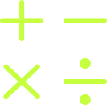

Fundamentos da matematica elementar
Resumo do semestre
Introdução
#Neste semestre, estudamos os fundamentos da matemática elementar, com foco em operações com frações, funções, equações do 1º e 2º graus e matrizes.
#Operações com frações
#Aprendemos a trabalhar com frações em todas as operações básicas:
#- Adição e subtração: é preciso ter o mesmo denominador (usando o MMC quando forem diferentes).
- Ex.: 1/2 + 1/3 = 3/6 + 2/6 = 5/6
- Multiplicação: multiplica numerador com numerador e denominador com denominador.
- Ex.: 2/3 × 4/5 = 8/15
- Divisão: mantém a primeira fração e multiplica pelo inverso da segunda.
- Ex.: 1/2 ÷ 3/4 = 1/2 × 4/3 = 4/6 = 2/3
Vimos também a simplificação de frações e a importância de sempre apresentar o resultado na forma mais simples.
#Funções
#Estudamos que uma função é uma relação entre dois conjuntos em que cada valor de x (entrada) corresponde a um único valor de y (saída), representada por f(x).
#Aprendemos os conceitos de domínio, imagem e a construção de gráficos no plano cartesiano.
#- Função do 1º grau: f(x) = ax + b, cujo gráfico é uma reta
- Função do 2º grau: f(x) = ax² + bx + c, cujo gráfico é uma parábola
Equações do 1º grau
#Aprendemos que são equações da forma ax + b = 0, resolvidas isolando a incógnita x com operações inversas dos dois lados da igualdade.
Ex.: 2x + 4 = 10 → 2x = 6 → x = 3
Equações do 2º grau
#Estudamos as equações da forma ax² + bx + c = 0, resolvidas pela fórmula de Bhaskara:
#- Delta: Δ = b² − 4ac
- Raízes: x = (−b ± √Δ) / 2a
Vimos que o valor de Δ indica quantas soluções reais existem: Δ > 0 (duas raízes), Δ = 0 (uma raiz) e Δ < 0 (nenhuma raiz real).
#Matrizes
#Aprendemos que uma matriz é uma tabela de números organizados em linhas e colunas, com ordem m × n. Estudamos os principais tipos (quadrada, identidade, nula) e as operações de adição, subtração e multiplicação de matrizes, além da multiplicação por um número.